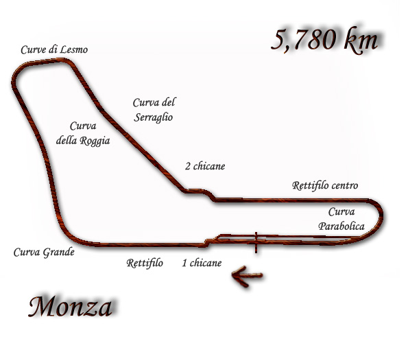

1975

Il venticinquesimo campionato mondiale di Formula 1, compiuto al Circuito Nazionale di Monza in Italia, fu stato vinto da Clay Regazzoni, che c
orreva su una Ferrari 312 T.
|  |
Il campionato mondiale di Formula 1 1975 organizzato dalla FIA è stato, nella storia della categoria, il 26° ad assegnare il Campio
nato Piloti e il 18° ad assegnare il Campionato Costruttori. È iniziato il 12 gennaio e terminato il 5 ottobre, dopo 14 gare |
Scuderie più importanti che hanno partecipato:
- Mercedes Benz
- Maserati
- Ferrari
- Alfa Romeo
- Lotus
- Cooper
- BRM
- Mclaren
HOME
Tutti i diritti sono riservati
Sito realizzato da Boniotti Elisa, Lucchini Davide, Tassone Thomas